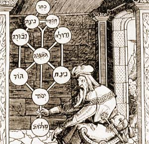

Sacred Texts Judaism
Buy this Book at Amazon.com
|

Title Page of Portae Lucis, of Joesph Gikatilla [1516] (Public Domain Image) |
Jewish Magic and Superstitionby Joshua Trachtenberg[1939] |
In the background of what has become known as ceremonial magic is medieval Jewish magic. In turn this was based on the Kabbalah, the Jewish traditions known as Haggadah, and other esoteric beliefs. This is a comprehensive review of Jewish magic from the 10th to the 15th century, including a rich lode of folklore. Many well-known Jewish traditions are explained, such as why a glass is broken at a wedding, and how the expression mazel tov is related to a belief in Astrology. Trachtenberg deals extensively with Golems, Succubi, the Lillim, (from Lilith--Adam's first wife), and other magical creatures, some well known such as werewolves, and others not so well, such as estrie, mare and broxa. There are detailed descriptions of talismans, amulets, charms, and other curious magical objects. There are chapters dealing with dream interpretation, medical beliefs, necromancy, and other forms of divination. There is also a short glossary, so if you are having trouble telling the difference between a Kaddish and a Kiddush, you're in luck.
The author, Joshua Trachtenberg (b. 1904, d. 1959) was a reform rabbi on the east coast of the US. This is an elaboration of his Columbia University Ph.D. thesis. Trachtenberg's appreciation of the role of folk-magic in Jewish culture is important for the study of Judaism, and also the roots of modern Pagan beliefs and practices.
Production Notes: This book contains many quotations in Hebrew. The shorter passages have been transcribed into Unicode. The longer ones are presented in image files.
--J.B. Hare, January 8, 2008.
Glossary of Hebrew Terms